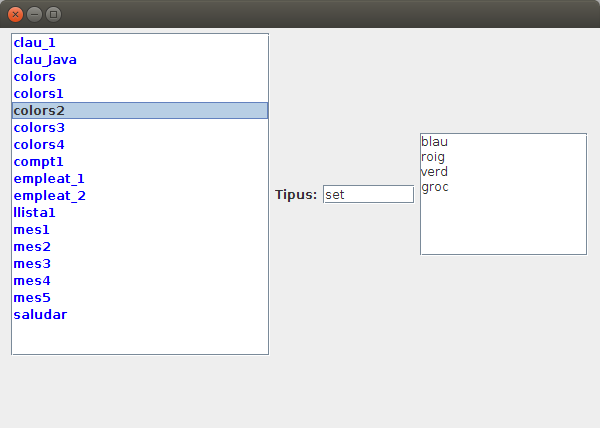
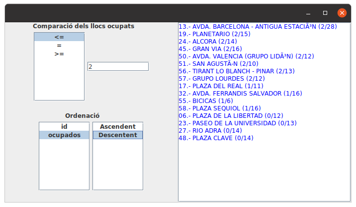

Exercicis
 Exercici 7.1
Exercici 7.1
En un nou paquet anomenat Exercicis dins del projecte Tema7_1 , crea la fitxer Kotlin T7Ex1_ConsultarClaus.kt , que permeta consultar totes les claus guardades en el nostre servidor Redis.
Ha de presentar totes les claus actuals en Redis i el seu tipus, però amb un número davant. Posteriorment ha de demanar un número per teclat, i presentar la clau i el valor corresponent al número introduït, fins introduir el 0. Observa que depenent del tipus de la clau s'haurà de fer d'una manera o una altra. En la imatge teniu un exemple de cada:
1.- clau_1 (string)
2.- mes2 (string)
3.- empleat_1 (hash)
4.- mes1 (string)
5.- saludar (string)
6.- empleat_2 (hash)
7.- mes6 (string)
8.- mes5 (string)
9.- mes4 (string)
10.- mes3 (string)
11.- colors (set)
12.- mes7 (string)
13.- llista1 (list)
14.- clau_Java (string)
15.- lista111 (list)
16.- colors1 (set)
17.- colors2 (set)
18.- colors3 (set)
19.- text (string)
20.- colors4 (set)
21.- clau_4 (string)
22.- clau_2 (string)
23.- puntuacions (zset)
24.- compt3 (string)
25.- compt2 (string)
26.- compt1 (string)
27.- quatre (string)
28.- pi (string)
Introdueix un número (0 per a eixir)
4
mes1: gener
Introdueix un número (0 per a eixir)
6
empleat_2
sou --> 1500.0
nom --> Berta
Introdueix un número (0 per a eixir)
13
llista1
primera
sisena
cinquena
Introdueix un número (0 per a eixir)
11
colors
roig
verd
blau
Introdueix un número (0 per a eixir)
23
puntuacions
Nom5 --> 2.75
Nom2 --> 3.5
Nom3 --> 5.0
Introdueix un número (0 per a eixir)
0
Exercici 7.2 (Redis)
Realitzar en el mateix paquet un altre programa, aquesta vegada gràfic, que ens diga el mateix, però d'una forma més atractiva.
- El programa s'ha de dir T7Ex2_ConsultaClausGrafica.
- Contindrà un JList on han d'aparéixer totes les claus, millor si estan ordenades alfabèticament. Recordeu que el JList és un poc complicat, que es basa en un DefaultListModel , i és a aquest a qui heu d'afegir els elements.
- Al costat ha d'haver un JTextField que diga de quin tipus és quan se seleccione un element del JList
- I també un JTextArea amb el seu valor (siga del tipus que siga)
Aquest seria l'esquelet.
import javax.swing.JFrame
import javax.swing.JLabel
import javax.swing.JTextField
import javax.swing.JTextArea
import javax.swing.DefaultListModel
import javax.swing.JList
import javax.swing.JScrollPane
import java.awt.FlowLayout
import java.awt.Color
import redis.clients.jedis.Jedis
import java.awt.EventQueue
class EstadisticaRD : JFrame() {
val etTipClau= JLabel("Tipus:")
val tipClau= JTextField(8)
val contClau = JTextArea(8,15)
val con = Jedis("localhost")
val listModel = DefaultListModel<String>()
val llClaus = JList(listModel)
init {
defaultCloseOperation = JFrame.EXIT_ON_CLOSE
setBounds(100, 100, 450, 450)
setLayout(FlowLayout())
llClaus.setForeground(Color.blue)
val scroll = JScrollPane(llClaus)
llClaus.setVisibleRowCount(20)
val scroll2 = JScrollPane(contClau)
add(scroll)
add(etTipClau)
add(tipClau)
add(scroll2)
setSize(600, 400)
setVisible(true)
inicialitzar()
llClaus.addListSelectionListener{valorCanviat()}
}
fun inicialitzar(){
}
fun valorCanviat() {
}
}
fun main(args: Array<String>) {
EventQueue.invokeLater {
EstadisticaRD().isVisible = true
}
}
I aquest el seu aspecte

Exercici 7.3 (Redis) (voluntari)
Realitzar un programa anomenat T7Ex3_JocEndevinaNumero.kt , que faça el joc d'endevinar un número del 1 al 100. Cada vegada que el jugador pose un número el programa ha de dir si el número a endevinar és major o menor que l'introduït, fins que es trobe.
Posteriorment pregunta el nom i guarda'l amb la marca en un conjunt ordenat (Sorted Set) anomenat joc_marques , on utilitzarem com a valor el nom del jugador, i com a puntuació (score) que serveix per a ordenar, el temps. Com a complicació tindrem que en un conjunt ordenat (igual que en un conjunt) no es poden repetir els valors. Ha de ser de la següent manera:
- Medir el temps des de que comença la partida fins que es trobe el número. T'anirà bé la funció System.currentTimeMillis() , que dóna l'hora actual en milisegons. La diferència entre el primer moment i el segon, serà el número de milisegons que ha durat la partida.
- Primer guarda sense tenir en consideració que es puga repetir el nom del jugador.
- (Voluntari) Després millora'l, per a que si es posa un nom que ja existeix, li afegisca un número: nom, nom_1, nom_2, ...
- (Voluntari) Finalment, limita la llista de puntuacions a les 10 millors.
Exercici 7.4 (MongoDB)
Agafa l'estat actual de Bicicas de la següent adreça:
http://gestiona.bicicas.es/apps/apps.php
En compte de copiar aquestes dades actuals en un fitxer i després nalitzar el fitxer, analitzarem directament fent la petició a la pàgina del servidor d'aquesta manera:
val url = URL("http://gestiona.bicicas.es/apps/apps.php")
val rd = url.openConnection().getInputStream().reader()
L'objecte rd és un Reader que directament el podem passar com a paràmetre del JSONTokener , vist en el Tema 3.
Estudia el format JSON, per a poder agafar bé la informació de cada estació, tal i com vam veure en el Tema 3.
- Fes un programa anomenat T7Ex4_IntroduirBicicas (amb main) que introduesca en MongoDB cada estació com un document en una col·lecció anomenada bicicas.
- Fes un altre programa anomenat T7Ex4_MostrarBicicas que agafe tots els documents de la col·lecció bicicas de la Base de Dades de MongoDb, que són totes les estacions, i traga la seua informació amb aquest aspecte (en la imatge només es mostren les 10 primeres, però han d'eixir totes)
01.- UJI - FCHS (5/27)
02.- ESTACIóN DE FERROCARRIL Y AUTOBUSES (11/28)
03.- COLóN (9/16)
04.- PASEO BUENAVISTA-GRAO (4/13)
05.- HOSPITAL GENERAL (5/18)
06.- PLAZA DE LA LIBERTAD (0/12)
07.- PLAZA TEODORO IZQUIERDO (4/13)
08.- PLAZA PRIMER MOLÃ (6/13)
09.- PATRONAT DESPORTS (7/14)
10.- PLAZA DOCTOR MARAñóN (0/23)
Exercici 7.5 (voluntari)
Fes un programa T7Ex5.kt que per mig d'una interfície gràfica agafe els documents de Bicicas de l'exercici anterior:
- Que acomplisquen la condició configurada amb el l'operador de comparació seleccionat en el JList anomenat comparacio i el valor numèric introduït en el JTextField anomenat quantitat. Si aquest últim està en blanc, no ha d'haver cap criteri de selecció (s'han d'agafar tots els documents)
- Que estiguen ordenats pel camp seleccionat en el JList ordenació i amb el criteri ascendent o descendent triat en el JList ascDesc
Pots intentar-lo amb els mètodes find() i sort() , o amb el mètode aggregate().
Aquest seria l'esquelet del programa:
import com.mongodb.MongoClient
import org.bson.Document
import java.awt.*
import javax.swing.*
class ConsultaAvançadaBicicas : JFrame() {
val comparacio = JList(arrayOf("<=","=",">="))
val quantitat = JTextField(10)
val ordenacio = JList(arrayOf("id","ocupados"))
val ascDesc = JList(arrayOf("Ascendent","Descentent"))
val llEstacions = JTextArea()
val con = MongoClient("localhost" , 27017)
val bd = con.getDatabase("test")
init {
defaultCloseOperation = JFrame.EXIT_ON_CLOSE
setBounds(100, 100, 350, 350)
setLayout(GridLayout(1,2))
val panell1 = JPanel(GridLayout(2,1))
val panell1_1 = JPanel()
panell1_1.layout=BoxLayout(panell1_1,BoxLayout.Y_AXIS)
panell1_1.add(JLabel(" Comparació dels llocs ocupats"))
val panell1_1_1 = JPanel(FlowLayout())
panell1_1.add(panell1_1_1)
val panell1_2 = JPanel()
panell1_2.layout=BoxLayout(panell1_2,BoxLayout.Y_AXIS)
panell1_2.add(JLabel(" Ordenació"))
val panell1_2_1 = JPanel(FlowLayout())
panell1_2.add(panell1_2_1)
add(panell1)
panell1.add(panell1_1)
panell1.add(panell1_2)
val panell2 = JPanel(BorderLayout())
add(panell2)
comparacio.fixedCellWidth=100
val renderer = comparacio.getCellRenderer() as DefaultListCellRenderer
renderer.horizontalAlignment = JLabel.CENTER
val scrollComp = JScrollPane(comparacio)
panell1_1_1.add(scrollComp)
comparacio.selectedIndex=0
panell1_1_1.add(quantitat)
ordenacio.fixedCellWidth=100
val renderer1 = ordenacio.getCellRenderer() as DefaultListCellRenderer
renderer1.horizontalAlignment = JLabel.CENTER
val scrollOrd = JScrollPane(ordenacio)
panell1_2_1.add(scrollOrd)
ordenacio.selectedIndex=0
ascDesc.fixedCellWidth=100
val renderer2 = ascDesc.getCellRenderer() as DefaultListCellRenderer
renderer2.horizontalAlignment = JLabel.CENTER
val scrollAscDesc = JScrollPane(ascDesc)
panell1_2_1.add(scrollAscDesc)
llEstacions.setForeground(Color.blue)
val scroll = JScrollPane(llEstacions)
panell2.add(scroll)
setSize(600, 400)
setVisible(true)
// Quan canvien comparacio, quantitat, ordenacio i/o ascDesc és quan bisquem
comparacio.addListSelectionListener{ valorCanviat()}
quantitat.addActionListener(){ valorCanviat()}
ordenacio.addListSelectionListener{ valorCanviat()}
ascDesc.addListSelectionListener{ valorCanviat()}
ascDesc.selectedIndex=0
}
fun valorCanviat() {
// Ací és on heu de posar el codi per a seleccionar de MongoDB les estacions que acompleixen la condició i amb l'ordenació indicada
// Les heu de col·locar en el JTextArea llEstacions
// Els components que heu de comprovar són:
// - comparació (el JList amb l'operacdor de comparació seleccionat)
// - quantitat (el JTextField amb la quantitat que s'ha de comparar amb l'operador)
// - ordenacio (el JList amb el camp pel qual s'ha d'ordenar)
// - ascDesc (El JList amb el criteri d'ordenacoó, ascendent o descendent)
// Si no s'ha posat res en el JTextField quantitat, no ha d'haver condició de selecció, és a dir, s'han de seleccionar totes les estacions
}
}
fun main(args: Array<String>) {
EventQueue.invokeLater {
ConsultaAvançadaBicicas().isVisible = true
}
}
I aquest seria un exemple d'execució, en el qual s'han triat els documents amb 2 o menys llocs ocupats, i ordenats pel número de llocs ocupats de forma descendent

Llicenciat sota la Llicència Creative Commons Reconeixement NoComercial SenseObraDerivada 4.0